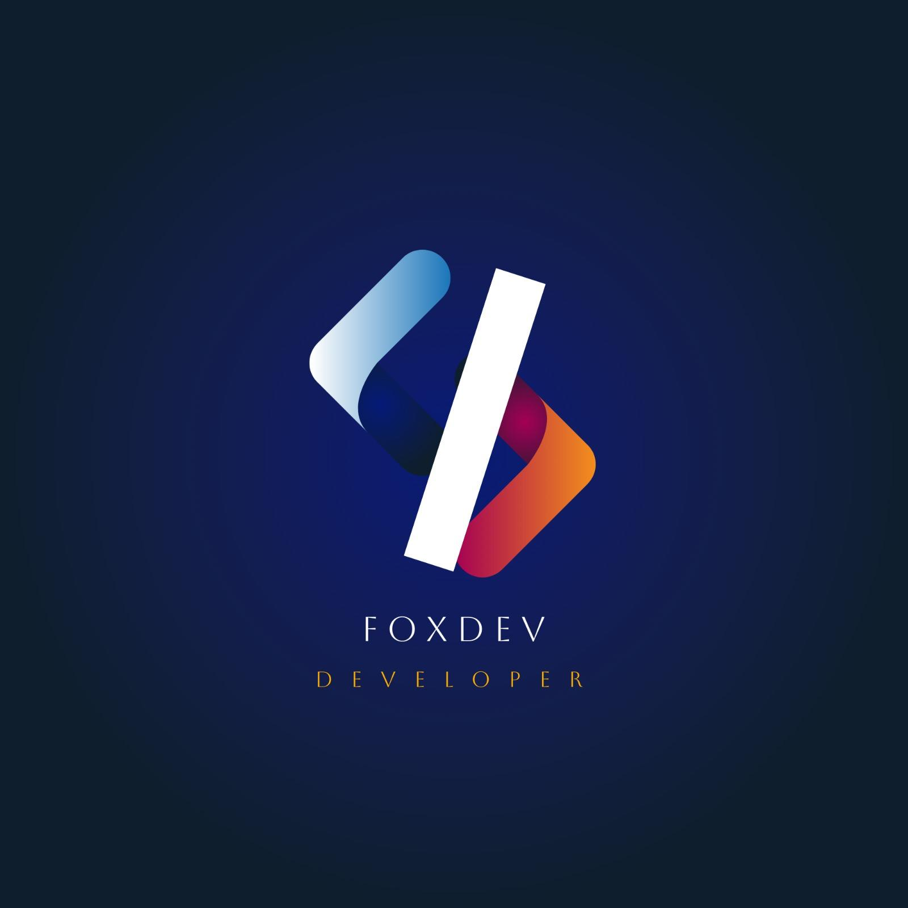

Discovery
Entiendo objetivos, audiencia, referencias visuales y contenido antes de construir.

Construyo interfaces que combinan diseño, estructura y micro-interacciones. Mi objetivo es que cada pantalla sea clara, rápida y memorable.

Selecciona una habilidad para ver el enfoque de trabajo.
Entiendo objetivos, audiencia, referencias visuales y contenido antes de construir.
Maqueto con componentes reutilizables, estilos consistentes y comportamiento no intrusivo.
Reviso responsive, interacciones, estados de foco, textos y detalles visuales finales.
Brief claro, referencias, alcance y contenido base.
Antes de decorar una pantalla, defino que debe entender el usuario, que accion debe tomar y que informacion necesita para decidir.
Trabajo con espacios, radios, bordes, sombras y tipografia como un sistema para que cada pagina parezca parte de la misma experiencia.
La estructura se separa en HTML semantico, CSS organizado por componentes y JavaScript para comportamiento, sin mezclar responsabilidades.
Reviso hover, foco, responsive, textos, formularios, imagenes y pequenos estados para que el resultado se sienta terminado.
Una buena pantalla deja claro que ofrece, por que importa y cual es el siguiente paso sin obligar al usuario a adivinar.
Las tarjetas, botones, inputs, paneles y estados se construyen con patrones repetibles para que el sitio sea facil de ampliar.
Las animaciones tienen que dar feedback, revelar jerarquia o hacer mas agradable una accion; si no ayuda, se reduce.
Prefiero dejar una base clara, explicable y estable antes que sumar efectos que se vean bien una vez y molesten despues.